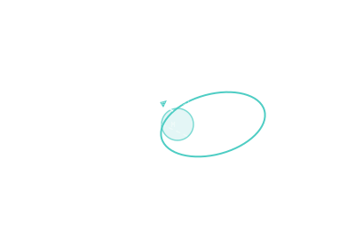

Orbit Insertion — LOI / MOI
The braking burn that captures your spacecraft into orbit instead of letting it fly past forever.

101 · zoom in
You've coasted for eight months. You can see Mars getting bigger out the window. If you do nothing, you'll fly past Mars and continue out into the solar system, never to return. To actually orbit, you have to brake. That braking burn — Lunar Orbit Insertion or Mars Orbit Insertion or whatever planet you're at — is the make-or-break moment of any orbital mission.
The math is unforgiving. You're arriving at a planet at several kilometres per second of leftover speed (V∞). To stay, you have to drop below the planet's local escape velocity. That means a long, hard, precisely-timed engine burn at exactly the closest pass to the planet, where Oberth gives you the most efficient braking. Mars Reconnaissance Orbiter burned for 27 minutes. Cassini's Saturn insertion took 95 minutes — the longest burn the spacecraft ever did.
If the burn fails or under-performs, you escape, and there is no second chance. Mars Climate Orbiter in 1999 had a unit-conversion bug — pounds-of-force confused with newtons — its insertion burn was too weak, it passed too close to Mars, and atmospheric drag destroyed it. The mission was lost in seconds. This is why orbit-insertion design is one of the most paranoid engineering activities humans do.
When your spacecraft arrives at the destination, it's moving fast — fast enough to escape if you do nothing. To capture into orbit, you have to bleed off enough velocity to drop below local escape speed. That braking burn is the orbit insertion. LOI for lunar (Apollo, LRO), MOI for Mars (MAVEN, MRO, Tianwen-1), and so on.
The burn happens at periapsis of the arrival hyperbola, where Oberth makes the burn cheapest. The size depends on V∞ — the leftover speed at infinity — and the desired orbital altitude. Mars MRO arrived with V∞ ≈ 2.6 km/s and spent ~1 km/s of `∆v` for capture. Cassini's Saturn orbit insertion was a 95-minute burn, the longest in the spacecraft's life.
If the burn fails or under-performs, the spacecraft escapes. There's no second chance. Mars Climate Orbiter is the cautionary tale: a unit-conversion error meant its MOI burn was too low, the spacecraft passed too close, and atmospheric drag tore it apart.
SEE IN THE APP
- /missions FLIGHT tab shows orbit-insertion ∆v for orbit-class missions